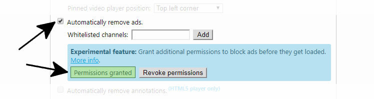

During years, and obviously not without countless updates, this extension has been able to remove ads, but as you may have already noticed the YouTube developers have introduced new ad formats that cannot be removed without causing issues. I have tried to fix them without total success so I have decided to give you the possibility to grant additional permissions to block ads before they get loaded.
When optional permissions have been granted and when the extension is configured to automatically remove ads (like on the image below), the extension will block web requests made by YouTube to load video ads. I use the permissions API to let you decide when you want to grant or revoke permissions.

The tabs, webNavigation, webRequest, and the webRequestBlocking permissions.
No. There should be no noticeable impact because unlike well-known ad blockers who parse all web requests as soon as you open your browser, this extension will parse web requests only when all the following conditions are met:
No. Unlike well-known ad blockers who block all ads, I don't want this extension to block ads that do not interrupt videos, and I want to permit creators to earn revenues from those ads because the "Whitelisted channels" feature does not work when ads are blocked before they get loaded.
Nothing has changed, Enhancer for YouTube™ has always been a safe, trustworthy, and privacy-preserving extension. Even if you grant permissions that give access to your browsing activity they are only used to block ads, nothing else. I am a developer but I am a user too so I treat your privacy like I would like mine to be treated.
Yeah, sometimes it happens (ツ)
More seriously, I implement and improve features based on users' feedbacks so thank you if you plan to write a positive review about this feature, the way it is implemented, or the extension in general. You can also write a comment or simply vote up comments directly on my website: https://www.mrfdev.com/how-to-use-enhancer-for-youtube (scroll down to the comments section).
-----
The Developer